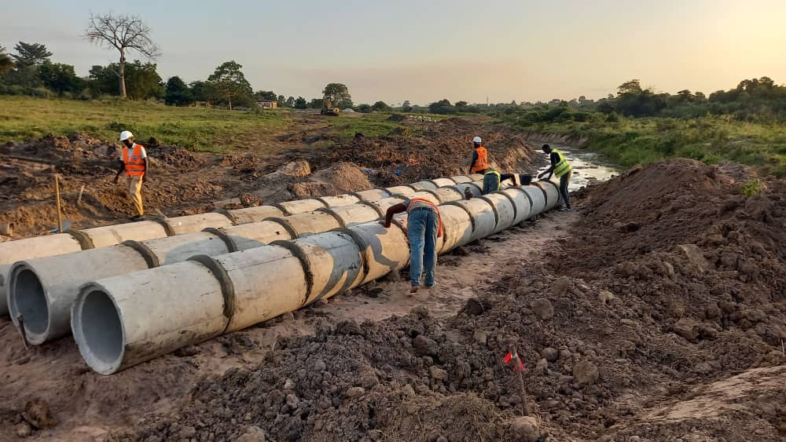
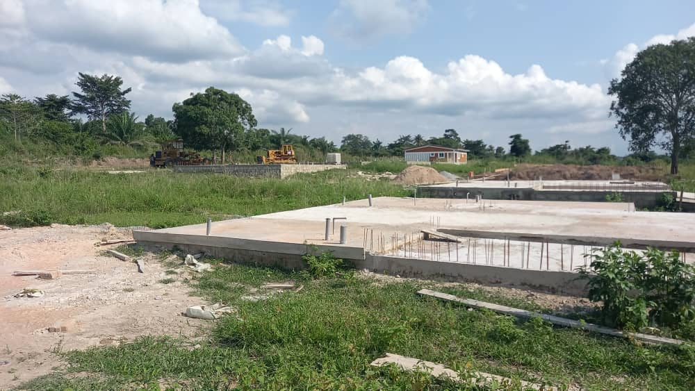

Voirie et réseaux divers
Des infrastructures qui durent
Nous concevons et réalisons les réseaux de voirie et d'assainissement nécessaires à un aménagement durable, du tracé initial jusqu'à la mise en service.
- Routes et voirie
- Réseaux divers (VRD)
- Ouvrages hydrauliques
- Travaux d'assainissement
- Études et travaux topographiques

Travaux routiers
De la terre brute à la route livrée
Terrassement, nivellement, compactage et réalisation de chaussées — nos équipes interviennent sur chantier avec les engins et le savoir-faire nécessaires.
- Travaux de terrassements
- Nivellement et compactage
- Construction et réhabilitation de routes
- Sécurité routière
- Suivi-évaluation de projets

Aménagement de terrains
Des lotissements prêts à construire
Nous viabilisons les lotissements avant commercialisation : voirie interne, réseaux d'assainissement et bornage, pour des terrains directement constructibles.
- Aménagement de lotissements
- Réseaux d'assainissement
- Voirie interne
- Travaux d'infrastructures souterraines
- Travaux d'éclairage public
